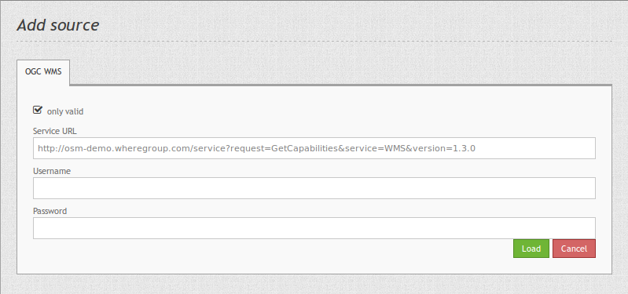
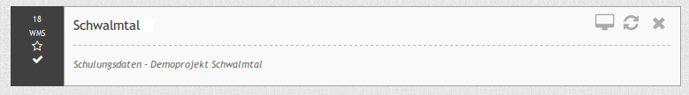

Source¶
With the data sources, you can register OGC WMS in version 1.1.1 and 1.3.0 into Mapbender3.
Further information about the registration process of services and their usage in Mapbender is available in the Quickstart document.
{kind=link}
Service URL: URL to the Capabilities document of the WMS service (z.B.:
http://osm-demo.wheregroup.com/service?SERVICE=WMS&Version=1.3.0&REQUEST=GetCapabilities)Username / Password: Input of the username and the password for secured services.
only valid: With this checkbox the WMS services are validated against their schema. Thereby only the standard-namespaces are supported. WMS services which refer to other schema-files in their Capabilities can not be registered as “only valid”. This restriction has its base from experiences with wrongly configured WMS services which resulted to some problems in their usage.
Gernerally, OGC WMS Capabilities refer to
xsi:schemaLocation="http://www.opengis.net/wms http://schemas.opengis.net/wms/1.3.0/capabilities_1_3_0.xsd. The supported namespaces in that schema are:Services which are registered without the check of validity are listed with an exclamation mark. In many cases they work with Mapbender3 although they have included own schema-files.

{kind=link}